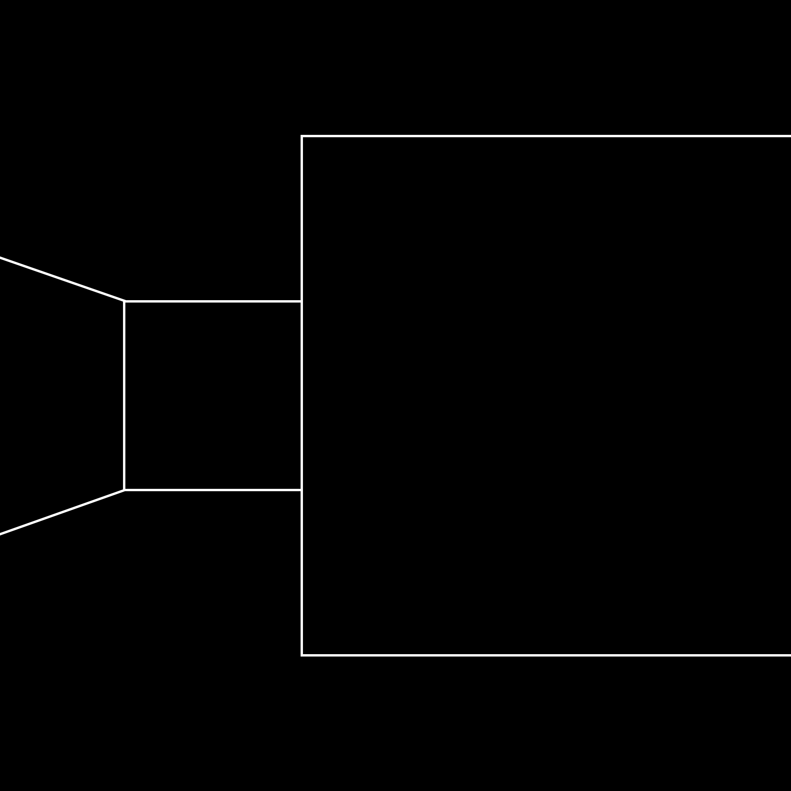

I have never, in my life, read a poem that ended with the words The End. Why is that, I wonder. I think perhaps the brevity of poems compared to novels makes one feel that there has been no great sustention of energy, no marathon worthy of pulling tape across the finish line.
And then I found a poem of mine that I had carefully written by hand in the sixth grade, and at the bottom of the page, in India ink, beautifully apart from the rest of the text, were the words The End. And I realized children very often denote the end because it is indeed a great achievement for them to have written anything,
and they are completely unaware of the number of stories and poems that have already been written; they know some, of course, but have not yet found out the extent to which they are not the only persons residing on the planet. And so they sign their poems and stories like kings. Which is a wonderful thing.